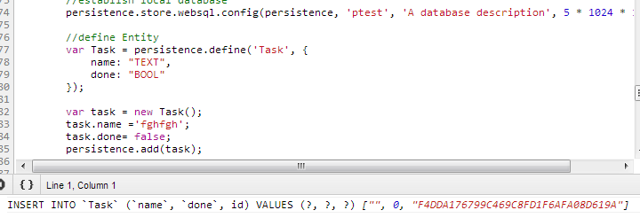

Persistence.js insert empty values in web sql - 04 April, 2013
I am starting to work with persistence.js library and open the problem to me: it saves empty data to web sql

After investigating the problem i have found this question and just want to clear and reproduce it in my notes. Thanks guys from this question :) The problem connected with this js file: persistence.jquery. If it used, we should rewrite code such as:

Thanks.